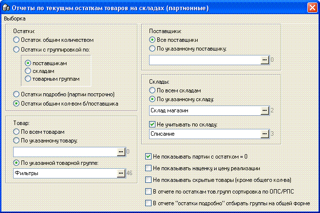
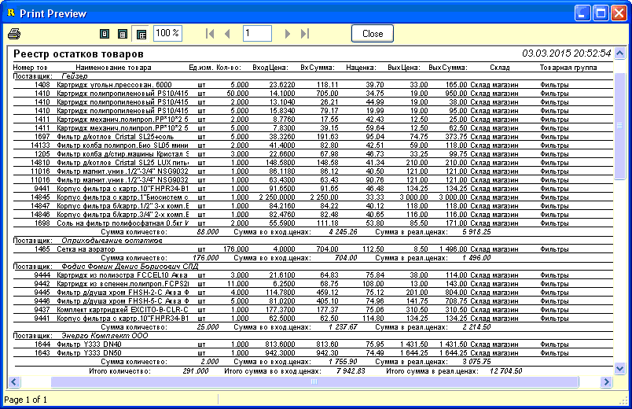
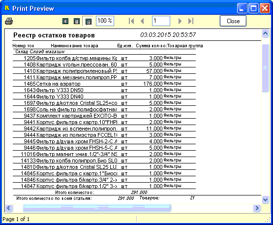

Остаток товара в программе может быть двух видов:
расчетный и партионный. Положительное качество расчетного
остатка товара в том, что он может быть рассчитан на любую
дату/время путем сложения/вычитания статей дохода/расхода по данному
товару, однако, минусом расчетного остатка является его длительность расчета.
Поэтому в программе для быстрого доступа к остаткам параллельно
ведется/вычисляется так называемый партионный остаток -
записи о нем хранятся в специальной таблице - таблице партий. В отличии от
расчетного остатка, партионный не требует обработки множества разных
документов для нахождения количества товара, доступ к нему практически
мгновенный, но отображается такой остаток только по состоянию на текущий
момент.
Данный отчет позволяет просматривать и выводить
на печать в разнообразном виде партионные остатки товаров по состоянию на
момент формирования данного отчета. Ниже, на рисунке, показана форма отчета
для выбора параметров отбора данных. Рассмотрим их подробнее.

Панели "Товар", "Поставщики", "Склады" - служат
для выбора параметров отбора данных с помощью основного отчета формы,
запускаемого с помощью первого пункта главного меню "Сформировать отчет по
остаткам".
Панель "Остатки" служит для указания вида и типа
отчета, стиля его группировки.
В правом нижнем углу формы находятся
дополнительные опции отбора, ниже, в описаниях типов отчетов, будет указано
какие из них могут быть задействованы в каждом конкретном случае.
1. Остаток общим количеством.
Просто отобразит диалоговое окно, без вывода на печать, с суммарным
количеством товара. Используется редко.
2. Остатки с группировкой по:
поставщикам/складам/товарным группам. Выводит отчет с суммарным
количеством по каждому товару по всем партиям. Товар группируется согласно
выбранной опции. Сумма количества подсчитывается как по группируемым единицам
отчета, так и суммарно по всему отчету. Из опций могут иметь значение "Не
показывать скрытые товары", "В отчете остатки подробно отбирать группы на
общей форме", "Не показывать партии с остатком=0".
3. Остатки подробно (партии
построчно). Выводит отчет по всем партиям товаров, согласно заданных
критериев отбора. Кроме дополнительных опций, таких как в отчете №2, действует
также "Не показывать наценку и цену реализации".
Пример показан на рисунке:

4. Остатки общим кол-вом
б/поставщика. Выводит отчет по суммарному остатку товара (суммируется
и товар, пришедший от разных поставщиков), в сжатом виде в 2 столбца. Опции
отбора аналогичны отчету №2. Пример вывода отчета на рисунке:

А главном меню формы содержится также несколько
наборов готовых отчетов, которые используют лишь часть значений параметров,
указанных на форме. Они будут рассмотрены в подразделах данного раздела
справки.